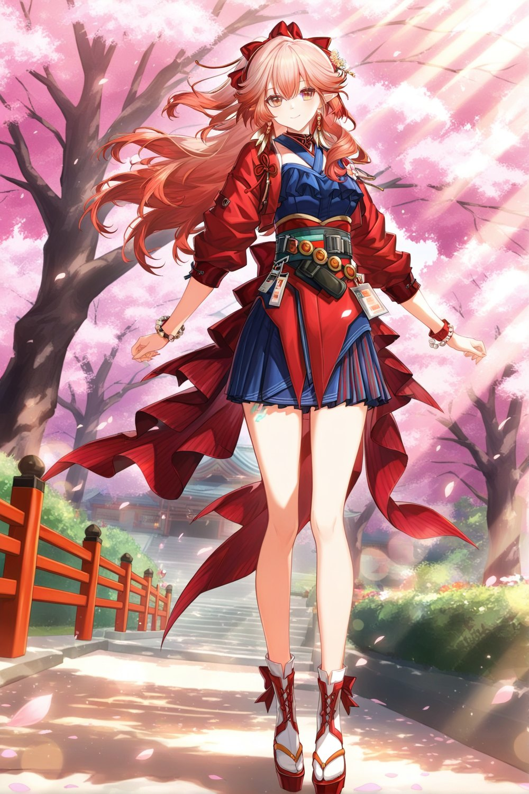
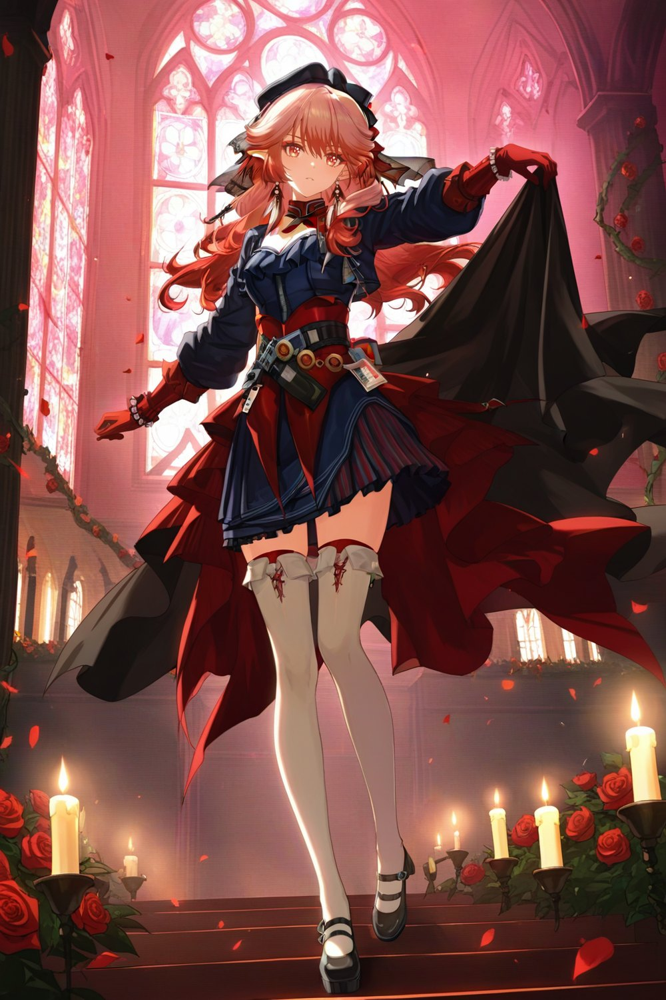
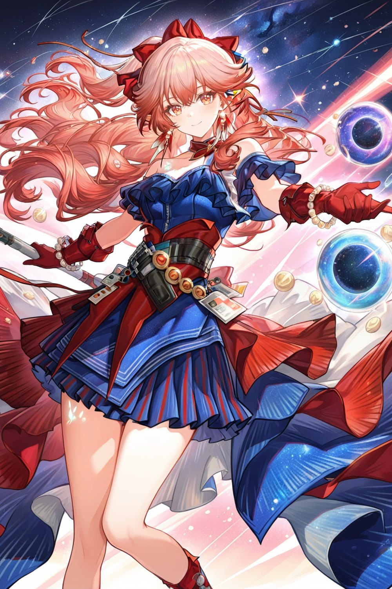

按住鼠标或空格键 —— 让画面从噪声中浮现
STABLE DIFFUSION
这里的每一张画
都不是人画的
全部来自 Stable Diffusion 社区 · Civitai 最高赞作品从噪声到画面
HOW STABLE DIFFUSION DREAMS
电脑不会拿画笔。那它到底是怎么“画”出一张画的？跟我来，一步一步拆开看。
先学会“破坏”
训练时，把成千上万张图一点点加上随机噪声，直到它变成一片纯粹的雪花。
看一张带噪声的图，猜出被加进去的噪声是什么。
“加噪”可以无限制造练习题：任何一张图 × 任何噪声强度，都是一道有标准答案的题。
拖一拖滑块——我会慢慢消失在雪花里。别担心，下一页会把我找回来。
再反过来“修复”
生成时从纯噪声出发，每一步：
预测噪声 → 减掉一部分 → 得到更干净一点的图。
一次猜出整张图太难，结果只会是一团模糊。每次只走一小步，上一步的误差能在下一步被修正——像雕塑，先打粗坯，再精修。
在“压缩空间”里画
直接在像素上反复去噪，计算量大得吓人。SD 的关键一招：先用 VAE 编码器把图压缩成一个小小的“潜在表示”。
所有加噪、去噪都在潜空间完成，最后用 VAE 解码器一次还原成像素。一张 6~8GB 显存的游戏显卡就能跑——这正是“本地部署”成为可能的原因。
ENCODER
让它“听懂”你的话
提示词先被切成 token，再由 CLIP 文本编码器翻译成一组向量——这是模型能理解的“语言”。
每一步去噪时，画面上的每个位置都会去“询问”这些向量：我这里该画什么？
👉 点击上方的词，看看它“负责”画面的哪一部分
“听话”可以调节
每一步，模型其实预测两次：一次看着提示词，一次什么都不看。两者之差，就是“提示词想把画面推向的方向”。
把“什么都不看”换成“看着你不想要的东西”——画面就会被主动推离这些特征。
按下 Generate 之后发生了什么
1girl, pink hair, red bow, cherry blossoms…LoRA：
给模型打个“补丁”
TEACH AN OLD MODEL A NEW FACE
SD 看过几十亿张图……可它从来没见过我。我是被“原创”出来的角色——那它是怎么记住我的长相的？
重装整栋楼，
还是贴一张贴纸？
想让模型学会新角色，最直接的办法是全量微调：把它所有参数都重新训练一遍。代价是——
每一个方块 = 一组参数。全量微调：全部都要改。
只学“变化量”，
而且是瘦的
原来的权重矩阵 W₀ 冻结不动。我们只学一个“改变量” ΔW，并把它拆成两个瘦长的小矩阵相乘：
学一个新角色，需要改变的其实只有少数几个“方向”：发色、瞳色、发饰、服装……就像调色只需要几个滑块，不必重画每一个像素。
它插在哪里？
LoRA 不是一个独立的模型，它要“寄生”在 SD 里面。点击 ZOOM IN，一层层放大看。
每个块里都有注意力层——文字就是在这里进入画面
h = W₀x + (α/r)·BAx一个旋钮，
控制“像不像”
使用时，LoRA 的改变量前面乘一个权重：
角色 LoRA + 画风 LoRA + 服装 LoRA……W₀ + w₁ΔW₁ + w₂ΔW₂ + … 像搭积木一样组合。
1girl, yao, cherry blossoms, <lora:yao_v1:0.8>
权重 0.8 · 推荐区间* 示意：权重 0 时展示的是底模理解的“粉发少女”（社区作品），并非同一种子的真实对比。
一个角色 LoRA 是怎么“炼”出来的
准备数据集
15~50 张角色图，多角度、多表情、多服装。


打标签
自动打标工具生成描述，再加一个触发词：
训练
冻结 SD，只训练 B、A。常见：rank 16~32、约 10 轮。
导出 · 使用
放进 models/Lora，提示词里写 <lora:yao_v1:0.8>
LoRA 会记住数据集里所有反复出现的东西。如果每张图都是同一个背景，背景也会被“焊死”在角色上——所以训练集要尽量多样。
终于轮到我登场了！一年四季、狐火、霓虹、星海……我的十套衣服，你想先看哪一套？
繁樱戏春
门槛消失之后
WHEN EVERYONE CAN “DRAW”
我很开心能被“画”出来。可是——教会 AI 画画的那些图，又是谁画的呢？
人人都是创作者
- 01不会画画，也能把脑海里的角色变成画面——遥就是这样诞生的
- 02本地部署：开源、免费、数据留在自己电脑里
- 03同人二创的门槛被大幅降低，更多人加入表达
谁被“炼”了？
- 01训练数据大量来自未经授权的画师作品
- 02几十张图就能练出一个“画风 LoRA”，复刻一位画师
- 03AI 图批量冒充手绘，挤压约稿与同人展生态
- 04二创本就是灰色地带，AI 把争议放大了百倍
评论区吵翻了
在小红书刷到的几类典型声音 · 观点归纳转述，非原帖原文 · 点击卡片翻面
“我的图被拿去练 LoRA，有人用它批量出图卖钱，署名还不是我。”
训练是否需要授权，法律仍在探索；但仿特定画师画风去商用，在社区里普遍被视为越界。
“我不会画画，AI 让我第一次把自己的 OC 画了出来，这有什么错？”
AI 确实打开了表达的门。问题不在“用不用”，而在怎么用、用了谁的东西、有没有诚实标注。
“AI 图混进同人本、谎称手绘，认真画画的人反而卖不动了。”
Pixiv 等平台已要求 AI 作品单独标注，不少同人展也限制或禁止 AI 作品。诚实标注是对观众与同行的基本尊重。
“二创本来就是官方睁一只眼闭一只眼，AI 刷屏会不会让官方收紧二创？”
同人生态依赖默契与信任。AI 低成本、大批量的产出，可能打破这份默契，最终伤害所有二创者。
法律正在给出答案
点击节点展开 · 两个方向同时在被认真对待
《Zarya of the Dawn》
漫画中由 Midjourney 生成的图像不受版权保护；作者撰写的文字与编排可以。
AI 产出 ≠ 自动受保护“AI 文生图”第一案
原告用 Stable Diffusion 生成图片后被他人盗用。法院认定：提示词设计、参数调整、挑选等体现了人的智力投入与个性化表达，构成作品；同时指出应显著标注 AI 生成。
使用者可以是作者“奥特曼案”
某 AI 绘画平台能生成与奥特曼实质性相似的图片，被判侵犯复制权、改编权，须停止生成并赔偿——全球首例生成式 AI 服务侵权判决。
AI 也可能是侵权者《人工智能生成合成内容标识办法》施行
AI 生成的图片、视频、文字等内容，须添加显式标识与元数据中的隐式标识。
标注成为义务如果是你，会怎么做？
选择一个选项，看看它意味着什么
- 01训练数据只用自己的或获得授权的作品
- 02发布时显著标注 AI 生成
- 03不复刻在世画师的画风去商用
- 04尊重原作与同人社区的规则
工具在变热爱不变
开场画廊作品来自 Civitai 社区（Illustrious / NoobAI 最高赞），版权归原作者，仅作课堂展示 · 角色“遥”及第四章作品为本人创作